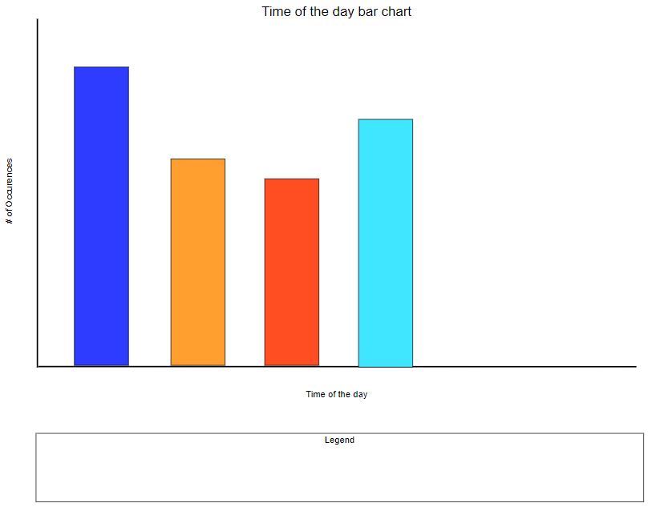
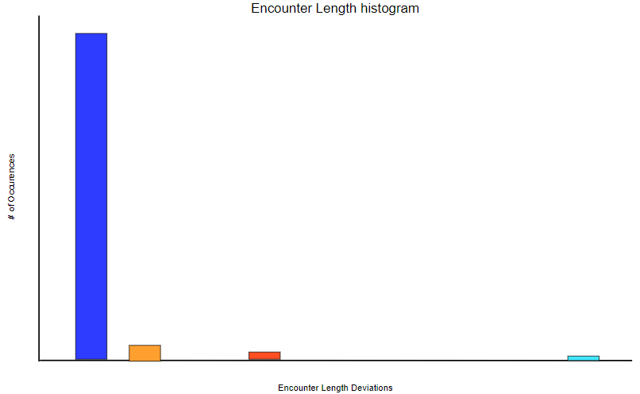

Sketches
This is the general layout we came up with by essentially following the order of the project goals.
This was our map layout for the C-goals. As we added to the project we decided to add a zoom in and out feature in the top left corner of the map as well as the Add Selection Circle to the Filter/Map bar.
The timeline is pinned to the bottom of the screen. We only used one color for the bars because the timeline is meant mostly for brushing and not discovering specific trends. The play and pause button allow the user to see the data year by year in all of the visualizations.
The time of the day bar chart has a bar for morning, afternoon, evening, and night. The bars are defined by this logic, morning is between hours 6 and 12, afternoon is between 12 and 18, evening is between 18 and 21, and night is between 21 and 6.
The shape bar chart has a bar for every described shape in the selected data.

The season bar chart has a bar for each season. The bars are defined by this logic, Winter is between months 11 and 1, Spring is between 2 and 4, Summer is between 5 and 7, and Fall is between 8 and 10.
Each bar chart has a legend that allows the user to select or deselect which bars are shown.
For the encounter length histogram we decided to use standard deviations to define the X-axis bins. For example, if there is a range of 32 standard deviations in the selected data then there are 32 bins that define the bars.
The word cloud finds the most frequently used words and displays the most frequent largest and the least frequent smallest. We decided to only use one color for the words because we are already using size to show frequency.